Projects
Power-law Constrains Memory?
In collaboration with Prof. Tao Zhou
| 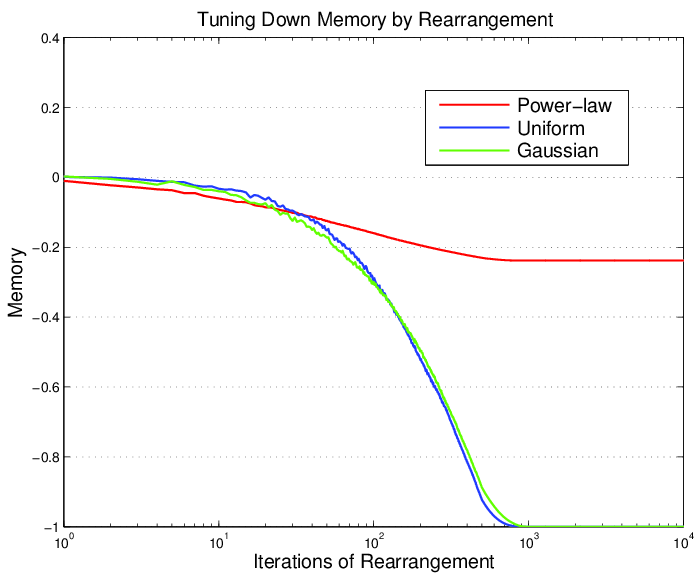 | For a time series 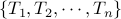, memory is defined as the first-order autocorrelation of the sequence [Goh and Barabási 2008], i.e. 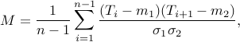
for describing the short-range temporal correlation of activities. Power-law distribution is ubiquitous in data from traffic, social networks and other human activities. Specifically, most of the inter-event time series from such real systems are found to be power-law distributed and meanwhile positively autocorrelated (positive memory). In this study, we analyze the hidden relation between memory and power-law distribution. We want to know whether such a positive bias in memory is due to the constraints imposed by the power-law marginal. Given a sequence, its memory can be tuned by rearranging the order of the elements, while preserving their values. We recently found, both theoretically and experimentally, for such a family of random series, power-law imposes a non-trivial constraint on the possible memory of the sequence, which differs markedly from Gaussian and uniform distributions. |
Furthermore, we are studying:
how power-law marginal constrains the memory of sequence
analytical expressions for the bounds on memory as a function of scaling exponent
how to generate random power-law sequence with specified memory (e.g. via Monte Carlo methods)
how to analyze the asymptotic behavior of diverging statistics with equiprobable-slice approximations
a better measure of short-range temporal correlations with no distribution-specific bias
Further information: [Details in html]
Publication:
Fangjian Guo and Tao Zhou. The relation between memory and power-law exponent (in progress).
Finding Conspirators in the Network: Machine Learning with Resource-allocation Dynamics
Outstanding Winner solution for MCM/ICM (Mathematical/Interdisciplinary Contest for Modeling) 2012
In collaboration with Jiang Su and Jian Gao
|  | A network of communication is embedded into the social relations among employees in a company, with every edge representing a message sent from one node to another and categorized by topics. Given a few known criminals, non-criminals and suspicious topics, then how to estimate the probability of criminal involvement for those not identified? And, furthermore, how to determine the leader of conspirators? We proposed a solution in the framework of machine learning, with carefully selected features including both topological quantities and semantic similarity measures obtained from “resource-allocation” dynamics. For those identified as most probable to be involved in crime, a sensitivity analysis is performed to test the robustness of our method under minor noise. We also used a revised ranking algorithm to find out the leader of the criminal group, which is supported by empirical results from criminology. Featured methods/keywords in our solution:
Further information: [Details in html] Publication:
|
Inverse Ising Problem via Pseudolikelihood Maximization
Project at 2012 CCAST Summer School on Statistical Physics and Complex Systems
Advised by Prof. Haijun Zhou (Institute of Theoretical Physics, Chinese Academy of Sciences)
| 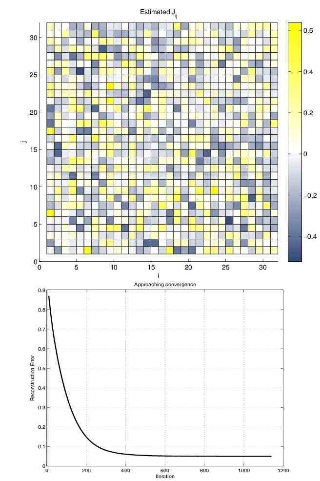 | In Ising model, the Hamiltonian is the sum of contributions from interacting spins and the states are distributed in the Boltzmann form, i.e. 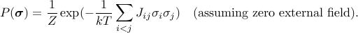
The Inverse Ising problem is formulated as: given some observations of states 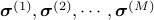 from the ensemble, then how to recover the interaction coefficients 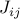? A straightforward MLE (Maximum Likelihood Estimation) is not feasible due to the difficulty for computing the partition function 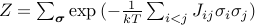, which requires an iteration over all possible states (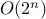). However, an approach proposed by [Aurell and Ekeberg 2012] circumvents this problem by introducing pseudolikelihood, which is the conditional probability of one spin taking +1 given all the others, i.e. 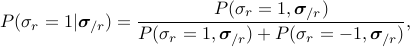
which cancels 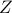, involving the neighbors of spin What I did:
|
 only.
only.{kind=link}
Predicting link directions via a recursive subgraph-based ranking
In collaboration with Prof. Tao Zhou (advisor) and Zimo Yang
 |
Link directions are essential to the functionality of networks and their prediction is helpful towards a better knowledge of directed networks from incomplete real-world data. We study the problem of predicting the directions of some links by using the existence and directions of the rest of links. We propose a solution by first ranking nodes in a specific order and then predicting each link as stemming from a lower-ranked node towards a higher-ranked one. The proposed ranking method works recursively by utilizing local indicators on multiple scales, each corresponding to a subgraph extracted from the original network. Experiments on real networks show that the directions of a substantial fraction of links can be correctly recovered by our method, which outperforms either purely local or global methods. Publication:
|